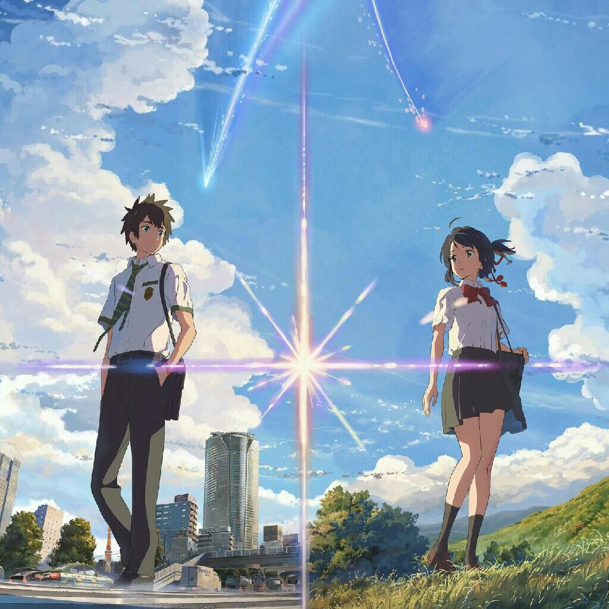

Mitsuha
2018-03-15 14:01:15.242442

Once in a while when I wake up
I find myself crying
The dream I must have had
I can never recall
But...But...
The sensation that I've lost something
lingers for a long time after I wake up
I am always searching
for something, for someone
This feeling has possessed me
I think from that day...
The day when the stars came falling
It was almost as if...
as if a scene from a dream
Nothing more, Nothing less
than a beautiful view.
Taki. Taki.
Don't you remember me?
My name is...
Mitsuha!
Mitsuha, What are you doing?
Well, It feels incredibly realistic...
What? "Mitsuha"?
Are you half asleep? Breakfast!
Hurry up!
What? What?
Do you want last night's leftovers?
You can have it.
Good morning.
Mitsuha, you are late!
I will make breakfast tomorrow.
Is this too much?
Oh, well.
You are normal today.
You were nuts yesterday.
What are you talking about?
Good morining, everyone.
This is an announcement from Itomori Town Hall.
Regarding the mayoral election,
to be held on the 20th next month, the election committee...
A comet with an orbital period of 1200 years will pass by in a month.
The comet will be visible to the naked eys for several days...
Just make it up with him.
It is an adult's matter.
"Position of Comet Timat"
JAXA are preparing to observe the celestial show of the century.
"Closest on October 4th."
We're going now!
Study hard!
Mitsuha
Morning, Sayaka, Tessie.
Morning
Get off, Why? Meanie.
You're heavy.
That is rude.
You two get along so well.
We do not!
Your hair looks all right today.
What?
Yeah, did your grandma exorcise you?
Exorcise?
You were totally possessed!
Cut out the occultism.
Mitsuha is just stressed, Right?
Huh? What are you talking about?
You don't remember?
And above all.
restoring the town's fiscal health to continue its
revitalization project.
only when these are achieved.
Can a safe and secure community be created!
As the incumbent mayor...
***
***
Morning.
So the mayor's kid and his contractor's kid get along too.
***
Mistsuha.
Stand up straight!
He's strict with his family
I'm impressed.
So embarrassing.
Sucks to be her.
Mitsuha.
In front of everybody...
"Who are you?"
"Tasokare" means "Who is that"
and is the origin of the word "tasogare-doki".
Twilight, When it is neither day nor night.
When the world blurs and one might encounter something not human.
Older expressions include "Karetaso-doki".
"Karetaso/Kawatare"=who is that and "Kawatare-doki".
Question! Not "Kataware-doki"?
Kataware-doki? I think that is a local dialect.
I've heard that Itomori's elderly still use classical language.
We're in the boonies, after all.
"Who are you?"
Ok next, Mitsuha.
Yes.
Oh, So you remember your name today.
You don't remember?
Yesterday you forgot where your desk and locker were.
You have bedhead and no ribbon.
What? No way! Really?
It was like you had amnesia.
Well, I do feel like I've been in a strange dream lately.
A dream about someone else's life?
I can't remember clearly.
I know! That was...
Your previous life!
Or maybe your subconscious linked to the Everett multiverse...
Stay out of this!
Oh! Tessie, did you write that in my notebook?
Nothing.
But, Mitsuha, You really were a bit weird yesterday.
you been feeling alright?
That is so strange, I feel fine.
Maybe it's stress.
That ritual is coming up, isn't it?
Oh, don't remind me!
I can not stand this town anymore.
It's too small and close-knit.
I want to graduate and go to Tokyo.
I don't blame you.
There is really nothing in this town.
The store closes at 9:00 pm.
No bookstore, No dentist.
But 2 pubs for some reason.
No jobs.
No brides.
Short sunlight hours.
Give me a break.
What?
I mean...How about we stop by a cafe?
A cafe? Really? Where?
Hello.
This is a cafe?
You knew there wasn't one.
Mitsuha just went home.
Things must be rough for her.
Well, She takes center stage.
Yeah.
Hey, Tessie.
What?
What will you do after you graduate?
What is this?
You asking about my future?
Nothing special,
I'll probably keep on living a normal life in this town.
I'd rather do that too.
You're not ready yet, Yotsuha.
Listen to the thread's voice.
When you keep twining like that,
emotions will eventually start flowing between you and the thread.
Threads don't talk.
She means "concentrate."
1000 years of Itomori's history is etched into our braided cords.
Listen, 200 years ago...
Here she goes again.
Sandal make Mayugoro's bathroom caught on fire
and burned down this whole area.
The shrine and old documents were destroyed.
and this is known as...
The Great Fire of Mayugoro.
The fire has his name? Poor Mayugoro.
So the meaning of our festivals became unknown
and only the form lived on.
But even if words was lost, tradition should be handed down.
That's the important task we at Miyamizu Shrine have.
But that foolish son-in-law...
As if leaving Shinto priesthood and this house weren't enough,
now politics? He is hopeless.
Have another, my man.
I'm counting on your help again.
Leave it to me.
You'll get votes from the Kadoiri and Sakagami Districts.
How's it going with her?
It's not that easy.
I smell corruption.
Dot't be ridiculous.
Bring us a few more hot sake.
Ok.
Katsuhiko, work on site this weekend.
Learn how to use explosives.
Can't hear you.
Yes!
We both have it rough, don't we?
Is that Yotsuha? She's all grown up.
They're both pretty like their mother.
Hey.
Hey.
It's the oldest sake in the world.
By chewing on rice, spitting it out,
and letting it ferment, it becomes alcohol.
"Kuchikamisake."
Do the gods appreciate sake made that way?
Of course they do.
Hey, look, It's Miyamizu.
Oh! I could never do that!
Isn't she embarrassed?
I can't believe it.
Cheer up, Mitsuha, Who cares if a few classmates saw you?
I envy you pre-pubescent lack of concern.
Why not sell lots of Kuchikamisake and use the money to go to Tokyo?
Where do you get such ideas?
Sell them with photos and making videos,
Name it "Shrine Maiden's Sake"
You will make money!
No, That breaks the Liguor Tax Law.
That is the problem?
I hate this town! I hate this life!
Please make me a handsome Tokyo boy in my next life!
What a fool...